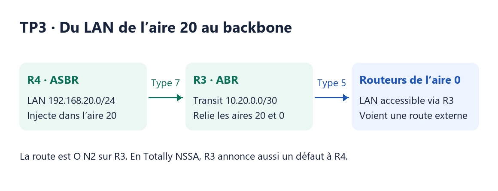
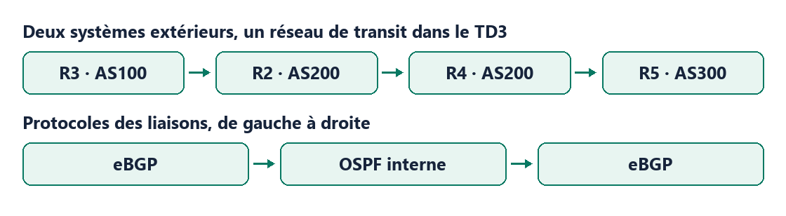
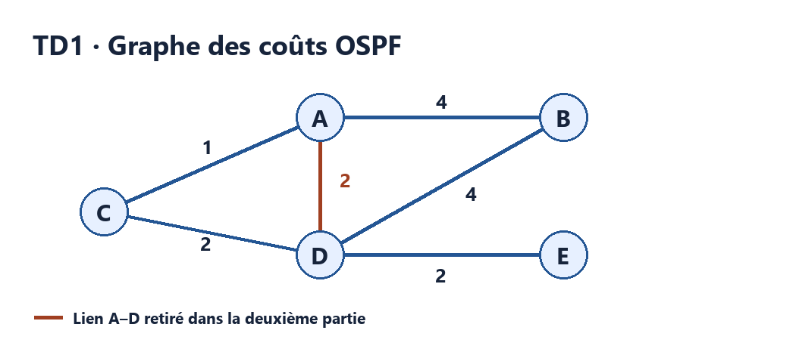

Comprendre le réseau multisite
Poly 1 · Internet, un réseau de réseaux
Quand un poste de l’IUT ouvre un site hébergé ailleurs, le paquet traverse d’abord le réseau d’accès, qui relie les équipements d’extrémité à leur opérateur. Il rejoint ensuite le cœur, un ensemble de routeurs et de liaisons à haut débit. Les longues liaisons terrestres et sous-marines forment des dorsales. Un PoP est un lieu où un opérateur dispose d’équipements pour collecter ou échanger du trafic.
Le client et le serveur utilisent un service, par exemple le Web en HTTPS. Le FAI donne l’accès, l’opérateur de transport achemine les paquets et l’opérateur de câblage construit ou entretient l’infrastructure physique. Une même entreprise peut cumuler ces rôles. Dans l’enseignement supérieur, RENATER relie des établissements français et s’interconnecte au réseau européen de recherche GÉANT.
Transit, peering et IXP
Avec le transit, un réseau paie un fournisseur pour atteindre des destinations au-delà de ses propres clients et pairs. Avec le peering, deux réseaux conviennent d’échanger du trafic pour les destinations prévues dans leur accord. Ils peuvent se joindre directement en peering privé ou passer par l’infrastructure partagée d’un IXP. Se raccorder à un IXP ne crée pas à lui seul un accord avec chaque membre.
Dans la classification du cours, un Tier 1 atteint l’ensemble d’Internet sans acheter de transit. Un Tier 2 combine transit acheté et peering. Un Tier 3 dépend du transit dans ce modèle. Ces niveaux décrivent des relations entre réseaux. La vitesse de la ligne, la taille du pays desservi ou le nombre de routeurs ne suffisent pas à les déduire.
Qui coordonne les ressources et les standards ?
L’ISOC soutient le développement ouvert d’Internet. L’ICANN coordonne les identifiants uniques, notamment via les fonctions IANA. Dans l’écosystème des standards, l’IAB assure un suivi architectural, l’IETF élabore des spécifications techniques avec l’IESG et l’IRTF mène des travaux de recherche à plus long terme avec l’IRSG.
Une RFC est un document numéroté. Elle peut décrire un standard, une bonne pratique, une expérience ou une information. Le poly présente l’ancien parcours en trois étapes. Le parcours actuel comporte Proposed Standard puis Internet Standard. RFC 6410
Poly 1 · Systèmes autonomes et décision de routage
Un AS est un ensemble de réseaux sous une même politique de routage, identifié par un ASN sur 32 bits. L’IANA gère le registre mondial et alloue des blocs aux registres régionaux, les RIR. Le RIPE NCC couvre notamment l’Europe. Les LIR gèrent et distribuent des ressources localement. Certaines plages d’ASN sont réservées aux usages privés ou à la documentation.
Un AS single-homed ou stub est raccordé à un seul AS amont. Un AS multihomed possède au moins deux interconnexions vers des AS distincts et peut choisir de ne pas transporter le trafic de tiers. Un AS de transit accepte d’acheminer du trafic entre d’autres réseaux. L’IXP fournit le point de rencontre physique. Le rôle de transit dépend des accords et des routes exportées.
À l’intérieur d’un AS, un IGP comme OSPF calcule des chemins entre les routeurs et fournit la joignabilité des prochains sauts. Entre AS, eBGP échange les destinations selon les politiques des opérateurs. À l’intérieur, iBGP distribue ces informations BGP. Exemple de la SAÉ : un paquet arrive au bord de l’AS, traverse son réseau grâce aux routes internes, puis ressort par le routeur frontière choisi.
Un poste envoie le trafic distant à sa passerelle. Le routeur cherche le préfixe le plus précis qui couvre la destination. Pour 192.168.20.10, un /24 correspondant est plus précis qu’une route par défaut 0.0.0.0/0. Cette décision de transfert se fait à partir des routes installées. Les protocoles ont auparavant choisi quelles routes proposer pour chaque préfixe. Vérifie toujours l’aller et le retour.
Poly 2 · De Hello au calcul SPF
OSPF est un IGP à état de liens. OSPFv2 transporte les routes IPv4 et s’encapsule directement dans IP avec le numéro de protocole 89. Sur un Ethernet courant, les Hello sont souvent envoyés toutes les 10 s à 224.0.0.5 et le délai Dead vaut souvent 40 s. 224.0.0.6 s’adresse au DR et au BDR sur les réseaux qui en élisent. OSPFv3 a été défini pour IPv6. RFC 2328 · RFC 5340
- Découvrir. Hello (paquet 1) révèle les voisins. Si ton Router ID apparaît dans le Hello reçu, le voisinage est bidirectionnel, ce qui correspond à 2-Way. Le passage à Full dépend de l’adjacence attendue sur le segment.
- Comparer les bases. DBD (2) échange des en-têtes de LSA. Un LSR (3) demande les annonces manquantes ou plus récentes.
- Synchroniser. LSU (4) transporte un ou plusieurs LSA, en réponse ou lors d’une inondation. LSAck (5) acquitte les annonces. Séquence et âge permettent de reconnaître leur version et leur validité. Les routeurs d’une même aire convergent vers une LSDB cohérente.
- Calculer. Chaque routeur place sa propre position à la racine du graphe et utilise SPF, l’algorithme de Dijkstra. Si un trajet direct coûte 100 et qu’un détour coûte
20 + 30 = 50, SPF retient le détour à type de route égal. Des coûts identiques peuvent permettre plusieurs chemins. Après une panne, de nouveaux LSA déclenchent un nouveau calcul.
Sur IOS, le coût est couramment dérivé de la bande passante de référence divisée par celle de l’interface, avec une valeur minimale de 1. Une référence de 100 Mbit/s peut donner le même coût à des liens de 100 Mbit/s et 1 Gbit/s. On peut changer la référence de façon cohérente dans le domaine ou fixer le coût au cas par cas, comme les 100 demandés au TP1. OSPF privilégie en général les routes intra-aire, puis inter-aires, puis les routes externes de type 1 et de type 2.
Le Router ID est un identifiant de 32 bits affiché comme une IPv4. Dans l’en-tête OSPF, il identifie l’émetteur et peut différer de l’IP source du paquet. Sur l’IOS du TP, un identifiant explicite est prioritaire. À défaut, la sélection s’appuie sur les loopbacks puis sur les interfaces actives lors du démarrage. L’en-tête indique aussi version, type, longueur, identifiant d’aire, somme de contrôle et informations d’authentification.
Types de réseaux et élection
Un lien point-à-point relie deux routeurs. En point-à-multipoint, OSPF modélise plusieurs liens point-à-point. Un Ethernet broadcast multiaccess permet à plusieurs routeurs de partager un même segment. Un réseau NBMA est partagé sans diffusion native. OSPF élit un DR et un BDR sur les segments broadcast et NBMA, avec des échanges adaptés au type de réseau.
Le DR centralise les adjacences sur le segment et émet le LSA réseau. Le BDR est prêt à prendre le relais. Une priorité d’interface à 0 rend un routeur inéligible. Parmi les candidats, la priorité puis le Router ID départagent l’élection. Elle est non préemptive. Deux routeurs DROther peuvent rester en 2-Way entre eux et être Full avec le DR et le BDR. Si un voisin reste bloqué en ExStart ou Exchange, compare aussi les MTU et les Router ID.
Poly 2 · Aires, LSA et redistribution
L’aire 0 est la dorsale qui relie les autres aires. Un routeur interne n’a ses interfaces OSPF que dans une aire, y compris si c’est l’aire 0. Un ABR relie des aires et tient une LSDB (base OSPF qui contient les annonces d’état de liens) pour chacune. Un ASBR injecte des routes externes dans OSPF, par exemple des routes statiques ou BGP. Un routeur peut cumuler des rôles. Un lien virtuel rend possible une jonction logique à la dorsale via une aire de transit compatible. Une aire stub ne sert pas de transit à ce lien.

Un LSA est une annonce contenue dans la LSDB. Son type et celui du paquet OSPF qui le transporte sont deux numéros distincts.
| Type de LSA | Ce qu’il décrit |
|---|---|
| 1 · Router | Liens et coûts d’un routeur dans son aire. |
| 2 · Network | Routeurs adjacents au DR sur un réseau partagé, annoncé par le DR. |
| 3 · Summary | Préfixe inter-aire annoncé par un ABR. Un type 3 peut aussi annoncer une route par défaut. |
| 4 · ASBR Summary | Comment joindre un ASBR situé dans une autre aire. |
| 5 · External | Préfixe externe annoncé par un ASBR dans les aires qui l’acceptent. |
| 7 · NSSA External | Route externe injectée dans une NSSA. Un ABR traduit en type 5 les annonces éligibles vers le reste du domaine. |
Les routeurs internes d’une même aire préservent la cohérence de leur carte. L’agrégation se fait à une frontière, par exemple sur un ABR pour les préfixes inter-aires ou sur un ASBR pour des routes externes. Sur IOS, O signifie intra-aire, O IA inter-aire, O E1/E2 externe et O N1/N2 externe NSSA (aire OSPF qui peut injecter des routes externes locales). E1/N1 additionnent coût interne et métrique externe. En E2/N2, la métrique externe prime et la distance interne peut départager des candidats de métrique externe égale. Dans [110/20], 110 est la distance administrative et 20 est la métrique.
Comparer les types d’aires du TP3

| Aire | Ce qu’un routeur interne reçoit | Injection externe locale |
|---|---|---|
| Normale, dont dorsale | Les annonces inter-aires et externes applicables à cette aire. | Type 5 via un ASBR. |
| Stub | Préfixes inter-aires spécifiques et défaut type 3. Types 4 et 5 écartés. | Pas d’ASBR interne. |
| Totally Stub | Préfixes internes et défaut type 3. Résumés inter-aires spécifiques supprimés. | Pas d’ASBR interne. |
| NSSA | Préfixes inter-aires et type 7 locaux. Types 5 externes bloqués à l’entrée. Le défaut dépend de la configuration. | Type 7 via un ASBR local. |
| Totally NSSA | Préfixes internes, type 7 et défaut type 3. Résumés inter-aires spécifiques supprimés. | Type 7 via un ASBR local. |
Règle pratique : l’ABR doit connaître les routes en dehors de l’aire avant de servir de sortie par défaut. La redistribution doit viser les préfixes voulus. Le routage à état de liens produit des chemins cohérents après convergence, au prix d’une LSDB à conserver et de recalculs en cas de changement. La taille raisonnable d’une aire dépend de la topologie et du matériel.
Poly 3 · BGP, des préfixes et des politiques
BGP-4 a succédé à EGP. C’est un protocole à vecteur de chemins. Il annonce qu’un préfixe est joignable, avec des attributs qui permettent de choisir ou refuser des chemins, sans exposer la carte des liens internes de chaque AS. CIDR permet des préfixes de longueurs variables et leur agrégation. MP-BGP étend l’échange à plusieurs familles de routes, par exemple IPv6 et certaines routes de VPN MPLS. RFC 4271 · RFC 4760
Deux pairs BGP établissent une session TCP, port 179. Le Router ID BGP fait quatre octets. En eBGP, les pairs de la maquette sont sur un lien directement connecté. Le TTL vaut souvent 1 par défaut sur IOS. En iBGP, deux routeurs du même AS peuvent s’appairer via leurs loopbacks. Si l’IGP maintient un trajet alternatif vers la loopback, une panne physique ne coupe pas forcément la session. Le pair reçoit les routes autorisées par la politique d’export, puis les changements. Une session perdue rend les chemins appris par cette session indisponibles en fonctionnement normal.
Lire les cinq messages
| Type | Rôle |
|---|---|
| 1 · OPEN | Échange les paramètres, dont l’ASN, le Router ID et les capacités. Le Hold Time est négocié. |
| 2 · UPDATE | Annonce ou retire des préfixes. Les annonces transportent les attributs du chemin. |
| 3 · NOTIFICATION | Signale une erreur avant la fermeture de la session. |
| 4 · KEEPALIVE | Confirme l’ouverture puis entretient la session. 30/90 s est un exemple de temporisation, à vérifier sur les pairs. |
| 5 · ROUTE-REFRESH | Demande au pair de réannoncer une famille de routes si la capacité a été négociée. |
L’en-tête de base fait 19 octets : marqueur (16), longueur (2) et type (1). Un marqueur valide ne prouve pas l’identité du pair. La taille classique est limitée à 4 096 octets, avec une extension négociable pour certains messages. RFC 2918 · RFC 8654
Attributs et meilleur chemin
ORIGIN, AS_PATH et NEXT_HOP sont bien connus obligatoires. ORIGIN indique la manière dont l’information est entrée dans BGP. En eBGP, un routeur ajoute son ASN à gauche de l’AS_PATH. Un chemin 200 100 indique qu’on atteint l’AS d’origine 100 via l’AS200. Un AS rejette normalement un chemin contenant son propre ASN. NEXT_HOP indique l’adresse du prochain saut. En iBGP, il reste souvent celui appris au bord, d’où l’importance de sa joignabilité via l’IGP ou d’un réglage de prochain saut.
Bien connus discrétionnaires : LOCAL_PREF oriente la sortie d’un AS et ATOMIC_AGGREGATE signale une perte de détail liée à l’agrégation. Optionnels transitifs : AGGREGATOR identifie l’agrégateur, les COMMUNITIES marquent des routes à traiter selon une politique. Une communauté classique se note souvent ASN:valeur. Les communautés étendues ont un format typé. Les Large Communities ont trois champs de 32 bits, ASN:fonction:paramètre. Optionnels non transitifs : MED, ORIGINATOR_ID et CLUSTER_LIST. Le Weight de Cisco reste local et ne circule pas dans les messages. RFC 1997 · RFC 8092
Pour comparer deux routes vers le même préfixe, commence par vérifier que leurs prochains sauts sont résolus et que la politique les accepte. Dans le modèle IOS du cours, regarde ensuite le Weight le plus grand, le LOCAL_PREF le plus grand, une route origine locale, le plus court AS_PATH, puis ORIGIN (IGP, EGP, Incomplete). Le MED le plus faible est préféré lorsqu’il est comparable, par défaut pour des routes du même AS voisin. Suivent la préférence eBGP sur iBGP, le coût IGP vers le prochain saut et d’autres critères de départage, dont l’ancienneté eBGP et le Router ID selon le cas. L’ordre précis dépend de l’implémentation et des options. Si un chemin traverse trois AS mais a LOCAL_PREF 200, il peut l’emporter sur un chemin à deux AS avec LOCAL_PREF 100.
iBGP à l’échelle et lien avec les TP
Une route apprise d’un pair iBGP n’est normalement pas réannoncée à un autre pair iBGP. Sans mécanisme particulier, il faut donc un maillage complet, soit n(n − 1)/2 sessions pour n routeurs. Avec 5 routeurs, cela fait 10 sessions. Un réflecteur de routes évite aux clients de maintenir ce maillage. ORIGINATOR_ID et CLUSTER_LIST servent à empêcher les boucles de réflexion. Une confédération découpe un AS en sous-AS présentés comme un seul à l’extérieur. RFC 4456 · RFC 5065

Dans le TD et le TP, lis show ip bgp summary pour l’état de session, show ip bgp pour les chemins et show ip route pour ce qui est réellement installé. Quand une route passe d’un protocole à un autre, trace-la sur chaque routeur et vérifie le retour. Une annonce BGP peut être présente sans être utilisée si elle a un prochain saut inaccessible ou si une meilleure route existe déjà.
Une route venant d’une autre aire est-elle externe à OSPF ?
Suis deux préfixes du TD. Le premier naît dans l’aire bleue et arrive dans le backbone, l’aire centrale 0. Les deux aires participent au même routage OSPF (Open Shortest Path First). Leur routeur frontière, l’ABR (Area Border Router), transmet une information inter-aires, repérée O IA dans la table d’un routeur distant sous Cisco IOS.
Dans l’aire verte, un routeur réintroduit dans OSPF des routes apprises par EIGRP (Enhanced Interior Gateway Routing Protocol). Cette redistribution lui donne le rôle d’ASBR (Autonomous System Boundary Router). Pour classer la route, demande-toi d’abord qui l’a introduite dans OSPF. Le nombre d’aires traversées ne suffit pas.
| Trajet dans le TD | Rôle à la frontière | Information propagée |
|---|---|---|
| Aire bleue → aire 0 | ABR | Route OSPF inter-aires |
| EIGRP → aire verte de type NSSA | ASBR | Route externe introduite dans l’aire par une annonce de type 7 |
Sigles et acronymes
- ABR · Area Border Router
- Routeur de bordure entre aires OSPF.
Exemple. Un routeur relié aux aires 0 et 20 annonce les réseaux de l’une à l’autre. - AS · Autonomous System
- Réseau ou ensemble de réseaux régi par une politique de routage commune.
Exemple. Dans le TD3, les routeurs R2 et R4 appartiennent à l’AS200. - AS_PATH · Autonomous System Path
- Liste des AS du chemin annoncé par BGP.
Exemple. Un chemin 200 300 indique que la route passe par l’AS200 pour atteindre l’AS300. - ASBR · Autonomous System Boundary Router
- Routeur qui injecte des routes externes dans OSPF.
Exemple. Le routeur de l’aire verte annonce dans OSPF un réseau qu’il a appris via EIGRP. - ASN · Autonomous System Number
- Numéro qui identifie un système autonome.
Exemple. Le numéro 200 identifie l’AS200 dans la maquette. - BDR · Backup Designated Router
- Routeur désigné de secours en OSPF.
Exemple. Sur le réseau partagé, le BDR prend le relais si le DR disparaît. - BGP · Border Gateway Protocol
- Protocole qui échange les routes entre réseaux autonomes.
Exemple. Un opérateur annonce à son voisin les préfixes dont il permet l’accès. - DBD · Database Description
- Paquet OSPF qui résume les annonces déjà connues.
Exemple. À l’établissement d’une adjacence, un routeur voit quelles entrées il lui manque. - DR · Designated Router
- Routeur désigné par OSPF sur un segment partagé.
Exemple. Sur un switch avec plusieurs routeurs, le DR centralise les adjacences du segment. - eBGP · External Border Gateway Protocol
- BGP entre routeurs d’AS différents.
Exemple. R4 de l’AS200 établit une session eBGP avec R5 de l’AS300. - EIGRP · Enhanced Interior Gateway Routing Protocol
- Protocole de routage interne qui évalue les chemins annoncés par ses voisins.
Exemple. Il compare notamment le débit minimal et le délai total de deux trajets. - IAB · Internet Architecture Board
- Organisme de suivi de l’architecture Internet.
Exemple. Il travaille sur la cohérence générale de l’architecture des protocoles. - IANA · Internet Assigned Numbers Authority
- Fonction de gestion des registres d’identifiants Internet.
Exemple. Le registre IANA indique quelles plages de numéros d’AS sont réservées. - IAR · Intra-Area Router
- Routeur dont toutes les interfaces OSPF sont dans une seule aire.
Exemple. Un routeur relié uniquement à des réseaux de l’aire verte est interne à cette aire. - iBGP · Internal Border Gateway Protocol
- BGP entre routeurs du même AS.
Exemple. Deux routeurs de bordure de l’AS200 peuvent s’échanger des annonces par iBGP. - ICANN · Internet Corporation for Assigned Names and Numbers
- Organisme qui coordonne les identifiants uniques d’Internet.
Exemple. Il coordonne notamment le système mondial des noms de domaine. - IETF · Internet Engineering Task Force
- Communauté qui élabore des spécifications techniques d’Internet.
Exemple. Les groupes de travail de l’IETF préparent et discutent des protocoles. - IGP · Interior Gateway Protocol
- Famille des protocoles de routage internes à un AS.
Exemple. L’AS200 utilise OSPF pour trouver les trajets entre ses routeurs. - IXP · Internet Exchange Point
- Point d’échange de trafic entre réseaux.
Exemple. Deux opérateurs utilisent le même point d’échange pour se remettre le trafic prévu par leur accord. - LAN · Local Area Network
- Réseau local.
Exemple. Le réseau des PC de la salle est un LAN. - LIR · Local Internet Registry
- Registre local de ressources Internet.
Exemple. Un opérateur membre d’un registre régional peut distribuer des ressources à ses clients. - LOCAL_PREF · Local Preference
- Préférence utilisée pour choisir une sortie de l’AS.
Exemple. Si les critères précédents sont égaux, un LOCAL_PREF de 200 bat 100, même si son AS_PATH est plus long. - LSA · Link-State Advertisement
- Annonce qui décrit une information de routage OSPF.
Exemple. Un LSA de type 1 décrit les liens et coûts d’un routeur dans son aire. - LSAck · Link-State Acknowledgment
- Paquet OSPF qui confirme une annonce reçue.
Exemple. Le routeur acquitte le LSA qui vient de lui être transmis. - LSDB · Link-State Database
- Base OSPF qui contient les annonces d’état de liens.
Exemple. Le routeur utilise la LSDB de son aire comme carte pour calculer ses chemins. - LSR · Link-State Request
- Paquet OSPF qui demande une annonce précise.
Exemple. Un routeur réclame un LSA dont il vient de découvrir une version plus récente. - LSU · Link-State Update
- Paquet OSPF qui transporte une ou plusieurs annonces.
Exemple. Dans le TD2, un LSU de type 4 transporte un Router-LSA de type 1. - MED · Multi-Exit Discriminator
- Indication BGP pour suggérer au voisin un point d’entrée.
Exemple. Avec deux liens vers le même AS, un MED plus faible peut faire préférer l’un des liens. - NBMA · Non-Broadcast Multi-Access
- Réseau partagé dépourvu de diffusion native.
Exemple. Les routeurs peuvent devoir envoyer individuellement leurs annonces aux voisins. - NEXT_HOP · Next Hop
- Adresse du prochain saut indiqué par BGP.
Exemple. Sur R4 dans le TD3, 10.0.45.2 est l’interface de R5 à laquelle envoyer les paquets. - NLRI · Network Layer Reachability Information
- Préfixe annoncé dans un message BGP.
Exemple. Dans le TD3, 192.168.30.0/24 désigne le LAN derrière R5. - NSSA · Not-So-Stubby Area
- Aire OSPF qui peut injecter des routes externes locales.
Exemple. Le routeur de l’aire verte injecte en type 7 une route EIGRP. - OSPF · Open Shortest Path First
- Protocole de routage qui calcule les chemins à partir des coûts de liens.
Exemple. Dans le TD1, A change de prochain saut quand son lien direct vers D tombe. - RFC · Request for Comments
- Document technique numéroté de la série Internet.
Exemple. La RFC 2328 décrit OSPF version 2. - RIR · Regional Internet Registry
- Registre régional des ressources Internet.
Exemple. RIPE NCC gère les ressources Internet de sa zone de service. - SPF · Shortest Path First
- Calcul des plus courts chemins à partir d’une carte de coûts.
Exemple. Entre un lien de coût 100 et un détour de coût 20 + 30, il retient le détour à 50. - TCP · Transmission Control Protocol
- Transport des données avec suivi des échanges et retransmission.
Exemple. Les routeurs BGP établissent une session TCP avant d’échanger leurs annonces.
Du cours aux TD et TP
Les trois polys structurent le cours. Les exercices des TD1 et TD2 sont reformulés à partir des feuilles annotées. Les questions du TP1 viennent de son sujet. Celles du TD3 et du TP3 sont reformulées à partir des comptes rendus. Les relevés et les résultats attendus sont distingués dans les démarches.
| Notion | Où la travailler | À savoir refaire |
|---|---|---|
| Internet, opérateurs et systèmes autonomes | Poly 1 et TD3 | Expliquer transit, peering, ASN et rôle des routeurs frontières. |
| Routage hiérarchique et calcul SPF | TD1, QCM · TD1, graphe | Expliquer le rôle d’un IGP, calculer le premier saut et recalculer après une panne. |
| Aires et captures OSPF | TD1, topologie · TD2, captures | Identifier ABR et ASBR, justifier un lien virtuel et distinguer Hello, LSU et LSA. |
| Interfaces, passerelles et voisinage | TP1, 1–2 · TD2, Packet Tracer | Adressage, voisinage, LSDB, routes intra-aire et inter-aires, tests de panne et du retour. |
| Authentification, aires et élection | TP1, 3–5 | Capturer les échanges et expliquer les rôles DR/BDR et le marquage interaire. |
| Redistribution de statiques | TP1, 6 | Vérifier l’origine et l’installation de la route externe avant le ping. |
| Frontières eBGP et AS de transit | TD3, deux topologies | Configurer les voisins, suivre le préfixe, relier la capture aux routes des quatre routeurs. |
| Voisinages OSPF et eBGP dans la même maquette | TP3, 1–2 | Justifier les entrées C, O IA et O E2 et capturer sur le bon lien. |
| Aires confinées et défaut | TP3, 3 | Comparer Stub et Totally Stub dans la table et la LSDB. |
| Injection et traduction d’une route NSSA | TP3, 4 | Suivre le type 7, la route O N2 et le défaut de la Totally NSSA. |
Questions TD & TP
TD1 · Justifier les réponses du QCM de routage
Énoncé reformulé. Expliquer le rôle de l’IETF, ce qu’est une RFC et comment Internet organise son routage.
- L’IETF élabore les standards techniques des protocoles Internet. Une RFC est librement consultable. Certaines RFC définissent un standard, d’autres sont informatives, expérimentales ou décrivent des bonnes pratiques.
- Internet interconnecte des réseaux de constructeurs différents grâce à une pile de protocoles commune. La voix sur IP est un service transporté par ce réseau.
- Le routage est hiérarchique. Un IGP comme OSPF calcule des routes dans un AS à partir d’informations reçues des voisins. BGP relie les AS selon des politiques. Le nombre de sauts IP ne constitue pas une métrique commune à tout Internet.
- Un routeur OSPF construit une carte de son aire à partir des annonces d’état de liens, puis y applique SPF. Il peut tenir compte des coûts d’interface et refaire le calcul après un changement.
TD1 · Calculer les routes de A et simuler la rupture de A–D
Énoncé reformulé. Établir la base des liens et calculer la table de routage depuis A, avant et après la coupure de A–D.

- Construis la carte en rangeant chaque lien dans les annonces de ses deux extrémités. Depuis A, tes premiers coûts sont C à 1, D à 2 et B à 4. Visite C en premier. Passer par C pour aller à D coûterait
1 + 2 = 3. Le lien direct reste préférable. - Depuis D, ajoute E au coût
2 + 2 = 4. Le détour vers B par D coûterait2 + 4 = 6, donc conserve le chemin direct de coût 4 jusqu’à B. - Après la coupure de A–D, la carte est mise à jour. A atteint D via C au coût
1 + 2 = 3, et E via C puis D au coût1 + 2 + 2 = 5. B et C gardent leurs chemins. Si l’interface signale la coupure, OSPF peut réagir immédiatement. Si elle reste active alors que les Hello disparaissent, le délai Dead détecte la perte du voisin.
| Destination | Avant, coût et premier saut | Après, coût et premier saut |
|---|---|---|
| A | 0, local | 0, local |
| B | 4 via B | 4 via B |
| C | 1 via C | 1 via C |
| D | 2 via D | 3 via C |
| E | 4 via D | 5 via C |
Le tableau donne les coûts jusqu’aux routeurs, car le dessin ne chiffre pas les interfaces des LAN. Pour établir une table de préfixes, ajoute les réseaux directement connectés à A et, pour chaque LAN distant, le coût d’interface annoncé par son routeur.
TD1 · Choisir les aires et suivre la propagation des LSA
Énoncé reformulé. Numéroter les aires de la topologie colorée, identifier les routeurs et déterminer les annonces en présence d’une Stub et d’une NSSA.
- Une numérotation possible est 0 pour la dorsale, 1 pour l’aire bleue, 2 pour la verte et 3 pour la jaune. Les routeurs qui relient deux aires sont des ABR. Les routeurs qui injectent les routes BGP ou EIGRP sont des ASBR. Les autres, dont toutes les interfaces OSPF restent dans une aire, sont internes à cette aire.
- Le switch de l’aire bleue relie plusieurs routeurs sur un segment broadcast. OSPF y élit un DR et un BDR par priorité puis Router ID. L’aire jaune atteint la dorsale en passant par l’aire bleue. Un lien virtuel entre les deux ABR qui partagent l’aire bleue la raccorde logiquement à l’aire 0. L’aire bleue sert de transit au lien virtuel et doit rester une aire normale.
- Le sujet écrit « orange » et la feuille annote « jaune ». En traitant cette aire comme Stub, elle garde les annonces internes et inter-aires de type 3, dont le défaut. Les types 4 et 5 en sont écartés. Dans l’aire verte, l’injection des préfixes EIGRP exige une NSSA si l’on souhaite conserver une aire confinée. Le routeur injecte ces préfixes en type 7, puis un ABR peut les traduire en type 5 vers les aires normales.
- Les types 1 et 2 décrivent la topologie de leur aire. Un type 2 apparaît seulement sur un segment partagé avec un DR et les adjacences requises. Les ABR génèrent des types 3 entre les aires. Les types 4 indiquent, dans les aires normales où c’est nécessaire, comment joindre un ASBR situé dans une autre aire. Les types 5 circulent dans les aires normales, tandis que les types 7 restent dans la NSSA jusqu’à leur éventuelle traduction.
TD2 · Monter le triangle OSPF, couper un lien puis ajouter les aires 0 et 40
Énoncé reformulé. Configurer les trois routeurs de l’AS100, observer la convergence lors de la coupure R1–R2, puis étendre la maquette et expliquer les tables.
- Dans Packet Tracer, crée le triangle R0–R1–R2 et les deux LAN d’extrémité. Attribue un sous-réseau différent à chacun des trois transits et des deux LAN. Par exemple, utilise les cinq réseaux
192.168.1.0/24à192.168.5.0/24suggérés par les annotations pour les cinq segments. Attribue une adresse distincte à chaque interface et configure chaque PC avec sa passerelle locale. - Sur R0, active OSPF dans l’aire 50 et fixe
ip ospf cost 100sur les interfaces de transit concernées. Adapte le coût au même scénario sur les autres routeurs quand tu les actives. Avec R0 seul, attends des Hello et aucune route apprise d’un voisin. Après R1 puis R2, compareshow ip route,show ip ospf databaseet les pings. Sur une route du LAN distant, le coût affiché peut aussi inclure le coût de l’interface LAN annoncée. - Avant la coupure, relève le prochain saut du LAN distant depuis R1. Dans la maquette, enlève le lien R1–R2 et observe les nouveaux LSA, puis le prochain saut via R0 après convergence. Rétablis ensuite le lien pour poursuivre la topologie du sujet.
- Garde le triangle en aire 50. Place le lien R0–R3 en aire 0, puis R3–R4 et le LAN serveur en aire 40. R0 et R3 sont ABR. Sur R4, cherche une route
O IAvers un LAN de l’aire 50. Sur R3, compare les réseaux connectés et les routes apprises. L’étiquette dépend de la position du routeur et de l’origine de la route. - Sur R0, lis
show ip ospf neighbor. Neighbor ID est le Router ID du voisin, Address son adresse sur le segment, Interface le port local et State l’état du voisinage. Dead Time est le temps restant avant de déclarer le voisin perdu en l’absence de nouveau Hello.
TD2 · Analyser un Hello et un LSU dans Wireshark
Énoncé reformulé. Expliquer les champs encadrés des deux captures fournies et en déduire à quel stade des échanges elles ont pu être prises.
- Hello, trame 22. L’interface
192.168.95.1, Router ID1.1.1.1, envoie un paquet OSPFv2 de type 1 à224.0.0.5dans l’aire 0. Le masque vaut/30, les délais Hello et Dead valent 10 et 40 secondes, et la priorité annoncée vaut 1. Le DR192.168.95.2et le BDR192.168.95.1sont des adresses d’interface. Le voisin actif2.2.2.2est un Router ID. La trame indique que l’émetteur connaît ce voisin et annonce déjà des rôles DR et BDR. Pour confirmer Full, consulte la table des voisins. - LS Update, trame 10.
192.168.95.2envoie à192.168.95.1un paquet OSPF de type 4 contenant un seul Router-LSA de type 1, émis par2.2.2.2.0x80000001est son numéro de séquence initial et l’âge indiqué est de 5 secondes. Le LSA décrit192.168.95.0/30et192.168.80.0/24, de coût 1 chacun. « Type: Stub » qualifie ici un lien décrit dans le LSA. L’en-tête montre que l’aire est la dorsale. - Le LSU correspond à un échange d’informations de topologie. Il peut servir lors de la synchronisation ou lors d’une mise à jour. Un LSR juste avant soutiendrait l’hypothèse d’une réponse à une demande. Pour conclure sur le moment précis, examine la séquence autour de cette trame. RFC 2328
TP1, 1–2 · Adresser la maquette et monter un voisinage OSPF
Énoncé. Configurer les deux routeurs selon le plan du groupe, régler le coût des liens à 100, observer les paquets, les tables et la base de données, puis vérifier l’échange entre les deux PC.
- Exemple de l’aire 50 : utilise
192.168.50.0/24,10.0.50.0/24et192.168.51.0/24. Place10.0.50.1et10.0.50.2sur le transit, des adresses différentes sur les deux LAN et les passerelles correspondantes sur les PC. Vérifieshow ip interface briefet le ping du transit. - Active OSPF sur les interfaces de transit et de LAN dans l’aire de ton groupe, avec
ip ospf 1 area 50pour cet exemple. Règleip ospf cost 100selon le sujet. Garde les interfaces LAN passives si elles annoncent le réseau sans voisin routeur. - Contrôle
show ip ospf neighbor,show ip ospf databaseetshow ip route ospf. Depuis le routeur de gauche, la route vers le LAN droit doit pointer vers le routeur de droite. Vérifie le retour et fais le ping de PC à PC.
TP1, 3 · Activer et observer l’authentification
Énoncé. Expliquer l’authentification OSPF, activer MD5 sur les deux routeurs du TP et mettre en évidence son utilisation dans la capture.
Dans l’en-tête OSPFv2 du TP, 0 signifie sans authentification, 1 mot de passe simple et 2 authentification cryptographique. MD5 correspond à la méthode historique utilisée sur le banc pour le type 2. Elle authentifie les paquets sans chiffrer les annonces de routage.
- Sur l’interface de transit, configure
ip ospf authentication message-digestetip ospf message-digest-key 1 md5 <clé-du-labo>sur les deux côtés. Le numéro est un identifiant de clé et la valeur fournie au banc reste dans la maquette. - Contrôle le voisinage puis capture un paquet OSPF. Déplie l’en-tête et relève le type cryptographique et l’identifiant de clé. Si les Hello arrivent mais que les routeurs restent sans voisinage, vérifie aire, temporisations, type de réseau et authentification.
TP1, 4–5 · Construire le backbone et lire l’élection
Énoncé. Relier les groupes par un switch sur l’aire 0, comparer les captures et tables de routage, puis identifier et expliquer l’élection du DR et du BDR.
- Utilise le schéma du TP pour ranger chaque interface dans l’aire de son segment. Sur le backbone, utilise le plan d’adressage commun prévu pour éviter de reprendre la même IP que l’autre groupe.
- Capture les échanges lorsque les nouveaux liens se mettent en place. Classe les paquets par rôle. Dans les tables, repère un préfixe d’une autre aire avec
O IAet identifie son prochain saut. - Sur le réseau partagé, lis la priorité et les rôles dans
show ip ospf interfaceetshow ip ospf neighbor. Un prochain renouvellement de l’élection dépend de la priorité puis du Router ID. Ne déduis pas le rôle à partir de la seule valeur théorique quand l’élection a déjà eu lieu.
TP1, 6 · Redistribuer les statiques de la zone verte
Énoncé. Passer la zone verte en routage statique et faire annoncer ses routes par Router4 dans l’aire 0. Comparer les tables de Router3 et Router4.
- Fais installer à Router4 la route statique vers le LAN de la zone. Vérifie aussi la route de retour de l’autre routeur de la zone.
- Dans le processus OSPF de Router4,
redistribute static subnetspermet d’injecter les routes statiques de la maquette. Contrôle les préfixes à faire passer et limite la redistribution à ceux du TP si d’autres statiques sont présentes. - Sur Router4, compare la route statique locale et la LSDB. Sur Router3, cherche la route externe distante et son prochain saut. Teste séparément l’aller et le retour plutôt que de déduire la connectivité de l’annonce seule.
TD3 · Établir BGP entre AS100 et AS200
Consigne reconstituée d’après le compte rendu. Relier les deux LAN avec une session eBGP entre les routeurs du transit en 10.0.0.0/30, puis vérifier préfixes, échanges et connectivité.
- Configure R0 en
10.0.0.1/30et R1 en10.0.0.2/30sur le transit. Leurs LAN sont respectivement192.168.10.0/24et192.168.20.0/24. Vérifie le lien et les passerelles avant BGP. - Dans
router bgp 100sur R0, indiqueneighbor 10.0.0.2 remote-as 200et annoncenetwork 192.168.10.0 mask 255.255.255.0si la route exacte existe. R1 configure l’opération symétrique pour son LAN et son voisin. - Lis
show ip bgp summarypuis la table de routage. En mode Simulation, isole TCP 179 et les messages BGP OPEN, KEEPALIVE et UPDATE. Le compte rendu donne la démarche et ne conserve pas un relevé de chaque paquet.
TD3 · Faire transiter un préfixe par l’AS200
Consigne reconstituée d’après le compte rendu. Relier AS100 et AS300 à travers R2 et R4 dans AS200, avec OSPF au centre. Comparer les voisins, les échanges et les routes sur l’ensemble du trajet.
- Monte les deux relations eBGP aux bords et le voisinage OSPF entre R2 et R4. Vérifie d’abord chaque relation indépendamment. Le sujet décrit une maquette Packet Tracer, avec OSPF pour la partie interne.
- Pour un LAN extérieur, suis la route eBGP reçue à un bord, son transport sous forme de route externe OSPF vers l’autre bord, puis son annonce eBGP. Le compte rendu montre la reprise des routes externes dans BGP. Pour limiter les boucles, sélectionne les préfixes autorisés à chaque export et vérifie le chemin inverse.
- Sur R2, compare la route du LAN proche apprise en BGP et la route du LAN à l’autre bout du transit apprise sous
O E2dans la maquette. Relie chaque entrée au prochain saut qui l’a fournie. Complète avec un aller-retour de PC à PC.
Relevé du TD. Sur R2, B 192.168.10.0/24 [20/0] via 10.0.12.1 correspond au LAN de l’AS100. O E2 192.168.30.0/24 [110/20] via 10.0.24.2 correspond au LAN de l’AS300 via R4. Dans la maquette IOS, redistribute ospf 1 match internal external 1 external 2 reprend aussi les externes OSPF pour l’export BGP. C’est ce qui manquait à la configuration initiale.
TD3, 3.3–3.7 · Diagnostiquer un ping et suivre ses en-têtes
Énoncé reformulé. Tester la communication entre PC2 et PC5, vérifier les voisinages et expliquer le trajet d’une trame en mode Simulation.
- Teste la passerelle de chaque PC, puis le LAN distant dans les deux sens. Dans le compte rendu, le ping local de PC5 réussissait alors que la passerelle par défaut était mal renseignée. La corriger vers
192.168.30.1a rétabli les tests après correction de la redistribution. - Vérifie la session R3–R2 et la session R4–R5 en BGP puis le voisinage R2–R4 en OSPF. Le compte rendu rapporte quatre préfixes reçus sur R3 de
10.0.12.2. Pour revoir l’établissement, isole TCP, BGP et OSPF dans la simulation. Le détail exact des trames restait à relever. - Pour le ping de PC2 vers PC5, l’Echo Request est de type ICMP 8, code 0, de
192.168.10.10vers192.168.30.11. Dans cette maquette sans NAT, les adresses IP restent les mêmes à chaque saut. Le TTL baisse aux routeurs et les adresses MAC sont réécrites sur chaque liaison. L’Echo Reply est de type 0, code 0.
TP3, 1–2 · Relier les deux AS et lire la table de R3
Énoncé reformulé. Construire une maquette avec les aires OSPF 0, 10 et 20 dans l’AS1, relier le second AS en BGP, capturer le trafic et vérifier les échanges entre PC.
- Dans l’AS1, relie les interfaces du backbone au switch et configure-les dans l’aire 0. Sur R3, utilise l’interface du réseau
10.0.0.0/24en aire 0, puis annonce le LAN192.168.20.0/24dans l’aire 20. Rends l’interface vers le PC passive. Dans le plan, la liaison de l’aire 10 était prévue en10.10.0.0/24. Le compte rendu a relevé10.0.1.0/24sur le banc. - Vérifie le transit
10.0.2.0/24entre R0 et R2. Configure les pairs eBGP réciproques entre AS1 et AS2 et annonce les LAN attendus avec les routes correspondantes présentes en table. R0 injecte les préfixes externes concernés dans OSPF. Pour le retour, côté AS2, vérifie une route effective vers les LAN de l’AS1. - Sur R3, lis
show ip ospf neighbor,show ip ospf databaseetshow ip route. Le relevé montre son LAN et le backbone enC, le LAN du groupe 1 enO IAvia10.0.0.1et le LAN de l’AS2 enO E2via10.0.0.3. Les pings depuis le poste du groupe 2 vers les deux autres LAN ont réussi selon le compte rendu. - Dans la WebUI IOS du banc, utilise Troubleshooting → Packet Capture sur l’interface de R3 vers le switch. Dans Wireshark, filtre
ospf. La portion exploitable montre des Hello de l’aire 0 à224.0.0.5avec des temporisations 10/40 s. Les Router ID réciproques dans les listes de voisins montrent un lien bidirectionnel. Vérifie l’état Full dans la table des voisins. Pour observer BGP, capture côté R0 ou R2 sur leur liaison et filtretcp.port == 179. Le compte rendu indique où relever la session et les routes BGP, sans fournir ces sorties.
TP3, 3 · Passer de Stub à Totally Stub en aire 10
Énoncé reformulé. Modifier l’aire 10 en Stub, puis en Totally Stub. Comparer à chaque fois la table de R4 et les annonces que l’ABR R1 lui transmet.
- Sur R1 et le R4 de l’aire 10, ajoute
area 10 stubsous le processus OSPF. Vérifie que l’adjacence revient avecshow ip ospf neighbor. Dans un Hello de l’aire 10, le bit E d’OSPF doit être désactivé. - En Stub, attends sur R4 une route spécifique
O IAvers le LAN de l’aire 20, plus une routeO*IA 0.0.0.0/0via R1. Le LAN de l’AS2 est atteint via ce défaut. Contrôle la base avecshow ip ospf databaseet la route par défaut avecshow ip ospf database summary 0.0.0.0. - En Totally Stub, remplace la configuration sur l’ABR R1 par
area 10 stub no-summary. R4 gardearea 10 stub. La route inter-aire spécifique vers le LAN du groupe 2 doit disparaître sur R4, alors que le défaut reste. Le bit E ne distingue pas les deux variantes. Compare les LSA de type 3 pour voir ce qui a changé. - Depuis le poste de l’aire 10, vérifie les destinations des groupes 2 et 3 et contrôle le retour. Le compte rendu décrit les résultats attendus pour cette partie. Les tables après bascule et la capture du lien R1–R4 étaient à relever.
TP3, 4 · Injecter un LAN en NSSA puis tester Totally NSSA
Énoncé reformulé. Ajouter un routeur dans l’aire 20, faire annoncer le LAN du PC comme route externe NSSA, puis filtrer les routes inter-aires sur l’ABR.
- Ajoute R4 entre R3 et le PC. Ce R4 est propre à l’aire 20. Le transit relevé est
10.20.0.0/30, avec.1sur R3 et.2sur R4. Déplace192.168.20.1/24sur R4. Le PC garde cette passerelle. Dans la configuration relevée, le LAN est directement connecté à R4 et la route statique vers ce même LAN est redondante. - Configure
area 20 nssasur les deux routeurs. Active OSPF sur le transit. Sur R4, redistribue la route connectée du LAN comme dans le relevé, en limitant la redistribution au préfixe voulu si d’autres réseaux connectés sont présents. Le LSA attendu pour le LAN est de type 7. Vérifieshow ip ospf database nssa-external. - Sur R3, le LAN auparavant en
Capparaît maintenant enO N2 192.168.20.0/24 [110/20] via 10.20.0.2.O N2indique une route externe de type 2 dans une NSSA. Ce code existe dans les deux variantes. Une annonce NSSA éligible est traduite en type 5 quand elle est propagée hors de l’aire. Vérifie cette annonce sur un routeur de l’aire 0, hors de l’aire 20. - Sur R3, passe à
area 20 nssa no-summary. Sur R4, conservearea 20 nssa. Le relevé de R4 en Totally NSSA montre le défautO*IA 0.0.0.0/0 via 10.20.0.1et ses réseaux connectés, sans routes spécifiques vers les deux autres LAN. Sur le lien de l’aire 20, recherche le LSA type 3 du défaut et le LSA type 7 du LAN. Le relevé de comparaison en NSSA simple et les captures de cette étape restent à faire.